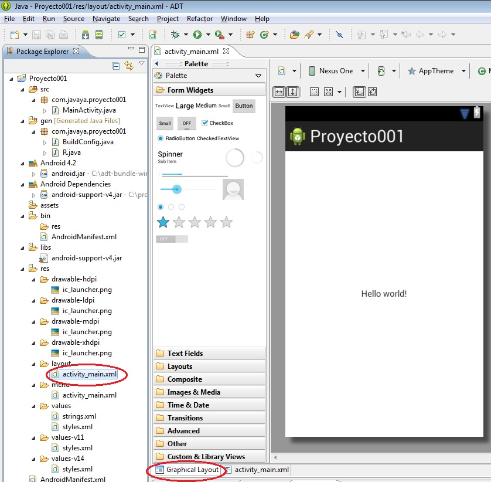
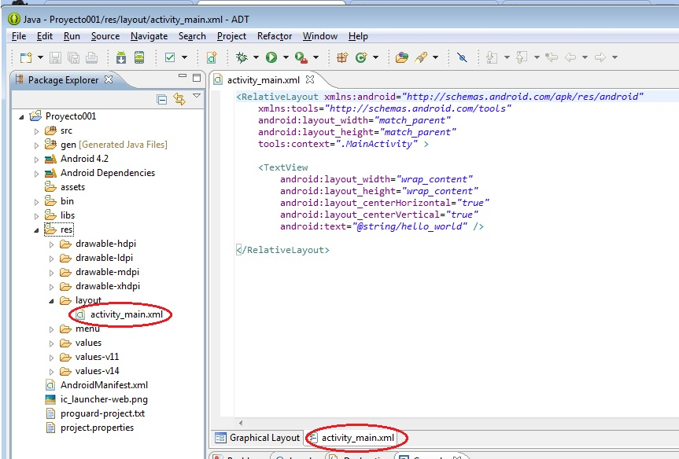
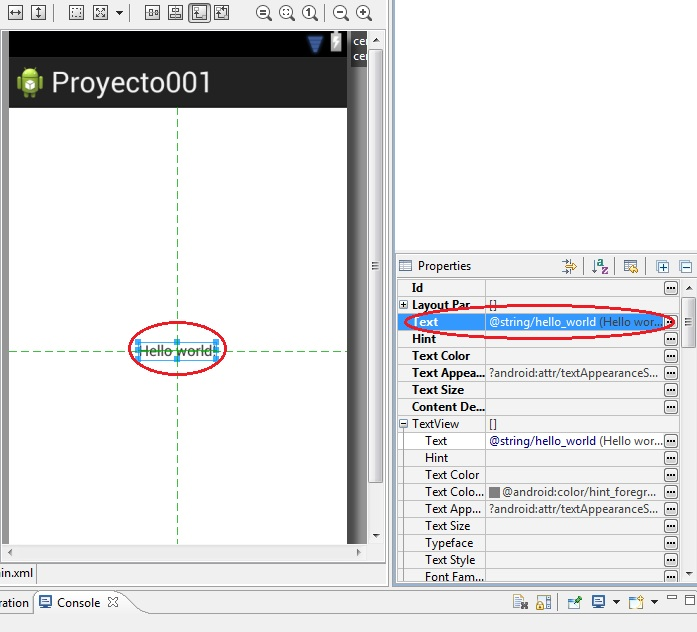
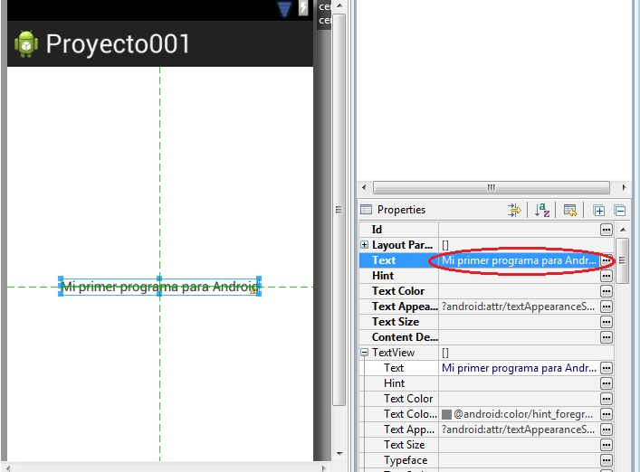
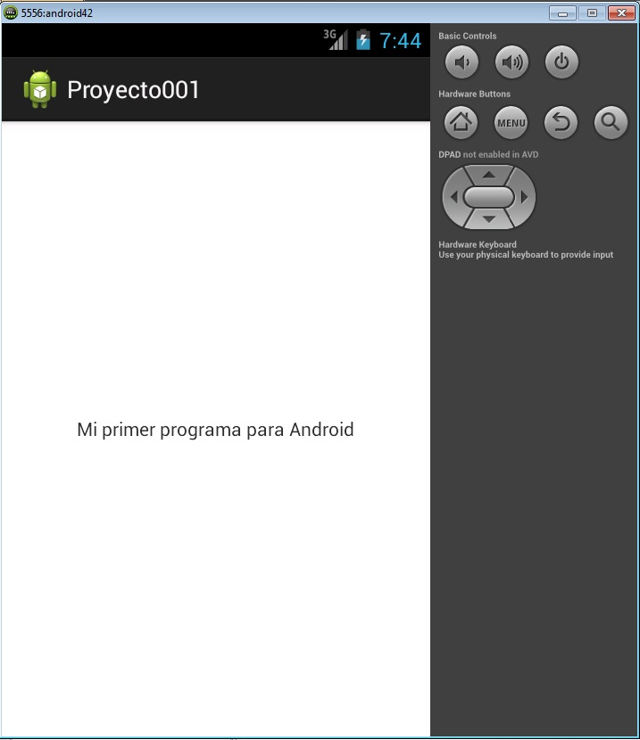
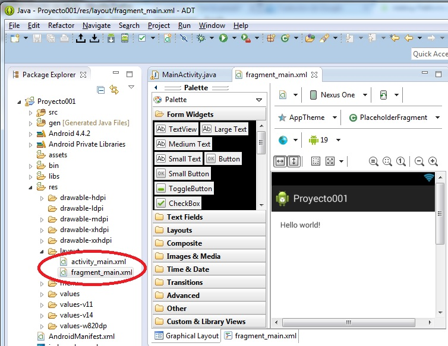
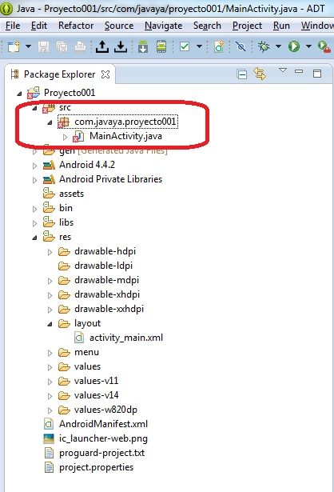
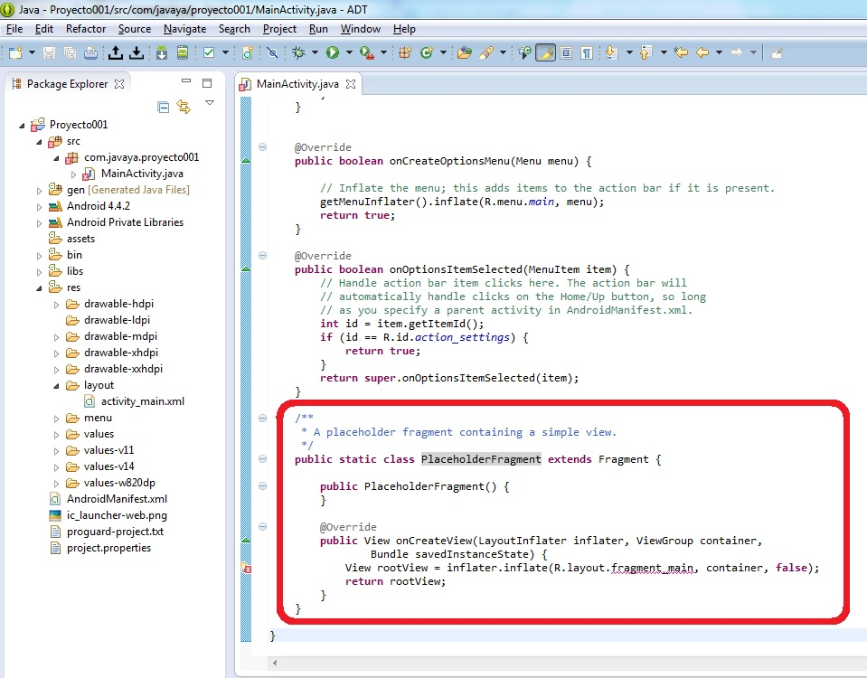
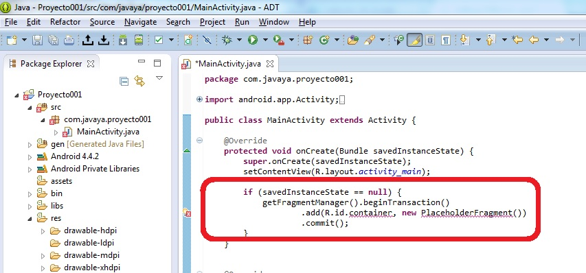
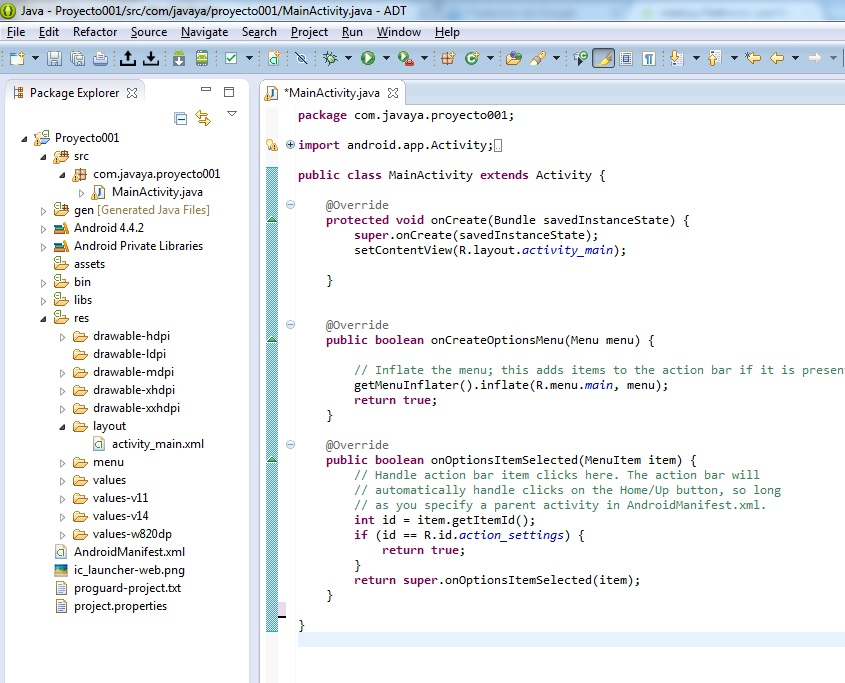

Ya tenemos todo lo necesario instalado para implementar el primer proyecto. Desde el menú de opciones: File -> New -> Android Application Project

En este diálogo especificamos el nombre de la aplicación y proyecto (pueden ser iguales) y el nombre del paquete java donde se almacenarán los archivos java que creemos (normalmente la url de su empresa al revés).
Ahora empezaremos a presionar el botón next para pasar a otras configuraciones de nuestra aplicación, por el momento dejaremos todos los valores por defecto en cada una de los diálogos que aparece (son 5 diálogos actualmente), en el último diálogo debe aparecer el botón "Finish" el cual presionamos.
El ADT nos genera todos los directorios y archivos básicos para iniciar nuestro proyecto:

No haremos en este momento un análisis del significado y objetivo de cada uno de estos directorios y archivos generados, sino a medida que avancemos con este curso iremos viendo en forma puntual y profunda.
La interfaz visual de nuestro programa para Android se almacena en un archivo XML en la carpeta res, subcarpeta layout y el archivo se llama activity_main.xml. En esta carpeta tenemos creada nuestra primer pantalla.
Al seleccionar este archivo el ADT nos permite visualizar el contenido en "vista de diseño (Graphical Layout)":
Si seleccionamos la otra pestaña podemos visualizar el archivo activity_main.xml en formato de texto:
El ADT ya insertó un control de tipo RelativeLayout que permite ingresar controles visuales alineados a los bordes y a otros controles que haya en la ventana (más adelante analizaremos este layout)
Ya veremos que podemos modificar todo este archivo para que se adapte a la aplicación que queremos desarrollar.
Luego contenido en el control RelativeLayout hay otro control de tipo TextView que es básicamente una etiqueta o label que mostrará en pantalla el valor almacenado en la propiedad text.
Podemos modificar directamente el archivo xml o en "vista de diseño" modificar los valores de las propiedades. Elegimos nuevamente la pestaña "Graphical Layout" y seleccionamos el TextView con el mouse y vemos que en la parte derecha de la pantalla aparece una ventana llamada "properties":
Y estando seleccionado el TextView buscamos la propiedad Text y cargamos: "Mi primer programa para Android" y presionamos enter, podemos ver que se actualiza la vista:
Con esto ya podemos probar nuestra primer aplicación para un dispositivo Android. SELECCIONAMOS con el mouse en la ventana de la izquierda (Package Explorer) el proyecto001 y presionamos el ícono de Run (triángulo verde) o desde el menú. Seleccionamos que se ejecute como aplicación "Android Application". Ahora se abrirá el AVD(Android Virtual Device) esto tarda bastante tiempo, es muy importante recordar que luego de ver ejecutándose el programa NO debemos cerrar el AVD para que la próxima ejecución se inicie más rápido (podemos minimizar el AVD)
Ahora podemos ver nuestra primer aplicación corriendo en el emulador de Android:
Como hemos visto el ADT nos genera en forma automática todas las carpetas y archivos básicos que necesitamos en un principio. En el siguiente concepto podremos empezar a programar verdaderamente. El único objetivo de este ejercicio es recordar los pasos para crear un proyecto.
Este proyecto lo puede descargar en un zip desde este enlace: proyecto001.zip
Problemas con la última versión del entorno de desarrollo de Android ADT
Si cuando crea un proyecto para Android se encuentra que en la carpeta layout se crean dos archivos XML en lugar de uno, es que tiene la último versión y este tutorial todavía no está adaptado:
Con esta versión del ADT Google propone utilizar Fragment aunque realicemos un programa "Hola Mundo", hasta que se actualice este tutorial podemos realizar estos pasos para trabajar sin Fragment en los ejercicios iniciales.
Veamos entonces que pasos debemos dar para dejar el proyecto que se adapte a todos los ejercicios propuestos en esta web y demás libros que se hayan publicado hasta marzo de 2014:
Pasos
-
Borrar el archivo activty_main.xml de la carpeta layout de nuestro proyecto (presionamos el botón derecho del mouse sobre el archivo y seleccionamos Delete:

-
Renombramos el archivo fragment_main.xml por el el nombre activity_main.xml presionando el botón derecho del mouse y seleccionando la opción Refactor - > Rename y cargamos en dicho dialogo activity_main.xml (por más que nos muestre un mensaje de warning lo ejecutamos al cambio):

-
Ahora nos dirigimos a la carpeta src y entramos al paquete donde se encuentra el archivo MainActivity.java (en este momento nos está mostrando un mensaje de error que lo solucionaremos)

-
Ahora borramos la clase PlaceholderFragment:

Y las cinco líneas que crean el objeto de la clase PlaceholderFragment:

Es decir que nuestro archivo MainActivity queda con la siguiente estructura(como vemos cuando lo grabamos ahora desaparecen los errores y podemos ejecutar nuestro programa):
